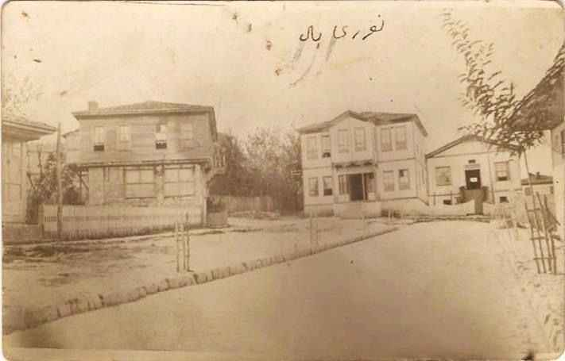
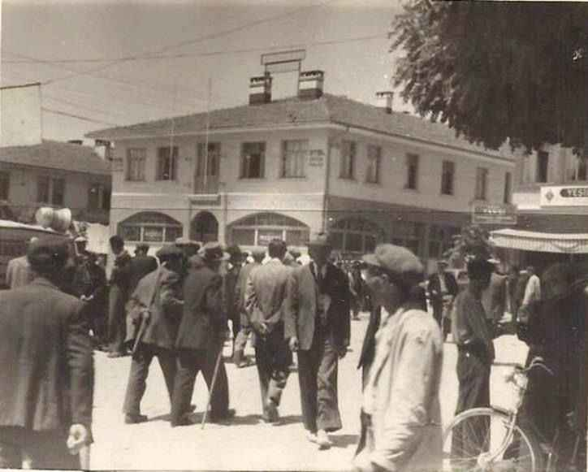

Sakarya ilinin bilinen tarihi Hititlerle başlar. Anadolu’da ilk siyasi birliği kuran Hititler, bu bölgeyi sınırları içinde bulundurmuşlardır. Hitit Devleti iç karışıklıklar ve bölünmeler neticesi yıkılınca, bu bölge Friglerin eline geçti. Dış güçlerin tahrikiyle iç karışıklıklar ve bölünmelerden sonra yıkılan Friglerin yerine bölgeye Lidyalılar hakim oldular. Persler, M.Ö. 6. asırda Lidya Devletini yenerek Anadolu’nun mühim kısmını işgal ettiler. M.Ö. 4. asırda Makedonya Kralıİskender, Pers Devletini yenerek İran’ı ele geçirdi. İskender’in ölümü üzerine bu bölge, halefleri arasında ihtilaf konusu oldu. Bitinya Krallığı, Makedonya Krallığına karşı İskender’in ölümünden sonra iç bağımsızlığını ilanetti ve bu bölgeye hakim oldu. M.Ö. 1. asırda Romaimparatorluğu, Bitinya Krallığı ile birlikte bu bölgeyi alarak kendi topraklarına kattı. M.S. 365’te Roma İmparatorluğu ikiye bölününce Anadolu’nun diğer kısımları gibi Bitinya bölgesi de, Doğu Roma (Bizans)nın payına düştü. Altıncı asırda Justinianus, Bitinya bölgesine önem verdi. İslam orduları, zaman zaman ve bilhassa İstanbul’un fethi için, bölgeden geçerken buraları fethetmişlerse de, uzun müddet kalmadılar. Ayrıca Sasaniler de zaman zaman bölgeye akınlar yaptılar.
1071 Malazgirt Zaferinden sonra, Anadolu Fatihi Kutalmışoğlu Süleyman Şah emrindeki Türk ordusu, bütün Anadolu gibi Sakarya bölgesini de fethetti. İznik başşehir yapılarak, Büyük Selçuklu Devletine bağlı Türkiye Selçukluları Devleti kuruldu. Bunun üzerine Bizans’ın teşvikiyle Haçlı Seferleri başladı. Birinci Haçlı Seferinde İznik terk edilerek başşehir Konya’ya taşındı. Bu bölge (Sakarya) ve Kocaeli yeniden Bizans’ın eline geçti. On dördüncü asırda Orhan Gazi devrinde, Kocaeli ve Sakarya bölgesi, ikinci defa fetholunarak Osmanlı Devletinin sınırları içine alındı ve o tarihten bu yana Türk hakimiyetinde kaldı. Kanuni Sultan Süleyman Han, İzmit Körfezini SakaryaNehri vasıtasıyla Sapanca Gölüne bağlayıp, dünyanın en büyük iç limanını meydana getirmeyi düşünmüştü. Bu işi Mimar Sinan yapacaktı. Seferler sebebiyle bu plan gerçekleşemedi. Sultan İkinci Mahmud Han, bu planı yeniden ele aldı. 30 bin işçi temin edildi. Fakat dış gaileler sebebiyle bu plan gerçekleşemedi. 1921’de Yunan ordusunun işgaline uğrayan Sakarya, Milli Mücadelede çok önemli rol oynamış olan bir şehirdir. Adapazarı, Karasu, Kandıra ve Geyve çarpışmaları Sakarya ilinin kahraman evlatları sayesinde zaferle neticelendi. 25 Mart 1921’de başlayan işgal, 21 Haziran 1921’de sona erdi.
Adapazarı; Tanzimattan sonra kurulan, müstakil sancak haline getirilen Kocaeli sancağına, Cumhuriyet devrinde de 1954’e kadar Kocaeli’ne bağlı kaldı. 1954’te Kocaeli ilinden ayrılan bir bölüm, Adapazarı il merkezi olmak üzere Sakarya ili kuruldu. Kocaeli’nin doğu yarısında kalan ilçeleri Sakarya iline bağlandı.
 